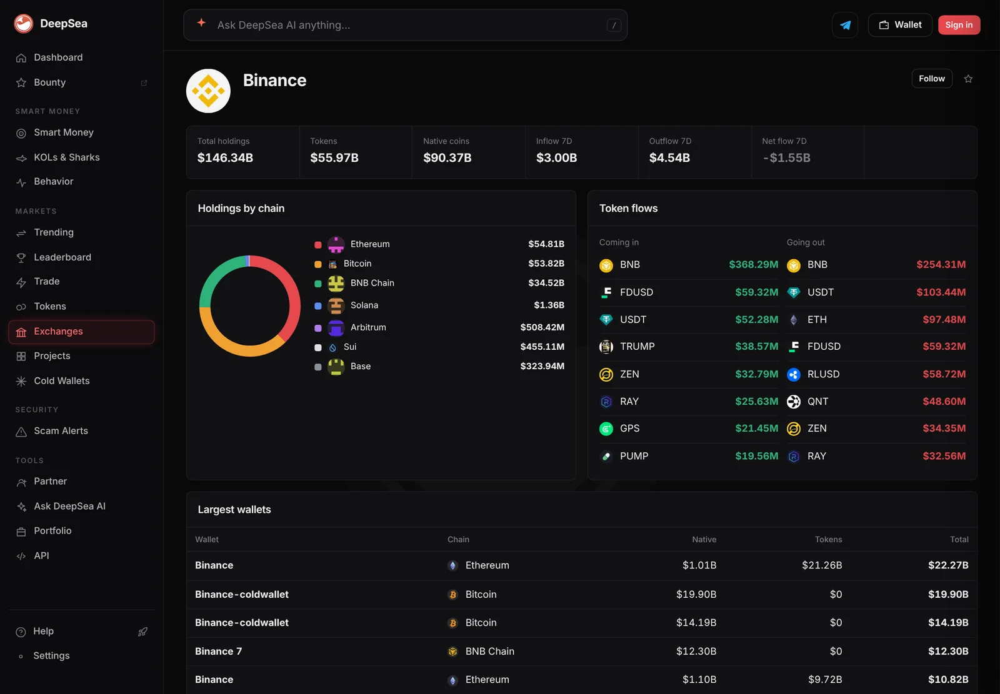
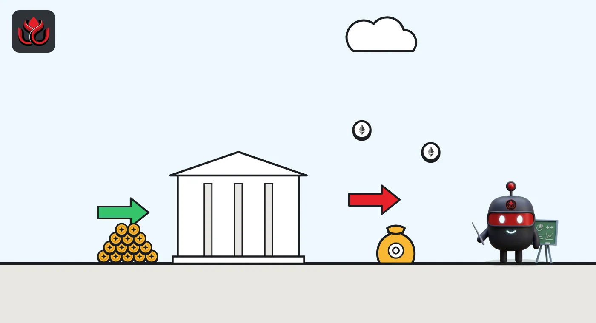

Binance's 7-day flow on DeepSea: a $1.55 billion net outflow after last week's $5.04B inflow
Last week's DeepSea report showed money pouring into Binance. Its live seven-day count now shows $4.54 billion leaving and $3.00 billion arriving.
Key points
- DeepSea's live page shows Binance with a seven-day net flow of minus $1.55 billion at 12:39 a.m. ET on November 5, 2026: $3.00 billion in, $4.54 billion out.
- DeepSea's weekly report for October 26 to November 1 had Binance at a net plus $5.04 billion.
- USDT leaned out ($103.44 million out, $52.28 million in) while BNB leaned in ($368.29 million in, $254.31 million out).
 What DeepSea's data shows
What DeepSea's data shows
DeepSea's Binance page adds up the wallets it labels as Binance: 381 wallets on 17 chains. At 12:39 a.m. ET on November 5, 2026, they held $146.34 billion. Over the last seven days, $3.00 billion came in and $4.54 billion went out, a net flow of minus $1.55 billion.
That is a sharp turn. DeepSea's weekly report for October 26 to November 1 showed Binance taking in a net $5.04 billion. The two numbers come from different DeepSea views and windows, so they are not a clean before and after, but the direction has clearly flipped.

Data: DeepSea (desea.io), checked November 5, 2026, 12:39 a.m. ET.
Which tokens left
The biggest single token on both sides was BNB, Binance's own coin: $368.29 million in and $254.31 million out, so it still leaned in. USDT, Tether's dollar token, went the other way: $103.44 million out against $52.28 million in.
Other large exits were ETH ($97.48 million), Ripple's dollar token RLUSD ($58.72 million) and QNT ($48.60 million). FDUSD showed $59.32 million both in and out, which nets to zero.
The numbers
Binance's seven-day flows by token, as DeepSea lists them.
Binance token flows, 7 days to 12:39 a.m. ET, November 5, 2026
US$ million
Source: DeepSea, Binance exchange page, read November 5, 2026, 12:39 a.m. ET.

Where Binance's $146 billion sits
DeepSea splits the holdings into $90.37 billion of native coins and $55.97 billion of other tokens. By chain, Ethereum holds $54.81 billion, Bitcoin $53.82 billion and BNB Chain $34.52 billion. Two wallets labeled Binance-coldwallet on Bitcoin hold $19.90 billion and $14.19 billion.
Against that $146.34 billion, the week's net outflow is about 1%. That is a small dent in the total but a big swing from last week. Not every flow means a customer, either. DeepSea sees exchange wallets, not who sent or received the coins, so some of the movement may be Binance shifting its own funds.
What to watch
Seven-day windows roll forward every day, so the live figure will keep changing. The next DeepSea weekly report, for November 2 to 8, will show a full week measured the same way as the $5.04 billion figure. Until then, the live page is the best guide.
The other thing to watch is dollar tokens. USDT and RLUSD both leaned out this week. If stablecoins keep leaving while BNB keeps arriving, the mix on Binance shifts, even if the total barely moves.
LC Insight analysis
This section is our reading of the facts above, not a statement of fact.
- We think the flip may partly reflect money moving back out after last week's very large inflow, but DeepSea does not show who moved it, so the reason is unknown.
What's next
- Binance's next DeepSea weekly report
- Whether USDT keeps leaving Binance
Disclaimer. This article is based on public information and the sources listed below as of the update time shown. It is for information only and is not investment, legal or tax advice. Figures may change as companies and authorities publish new data.